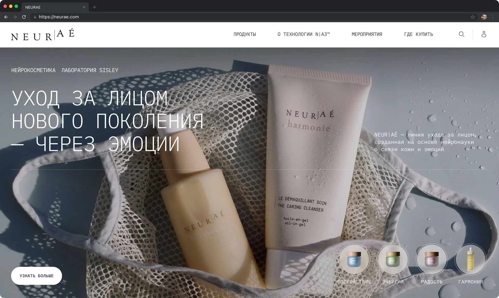
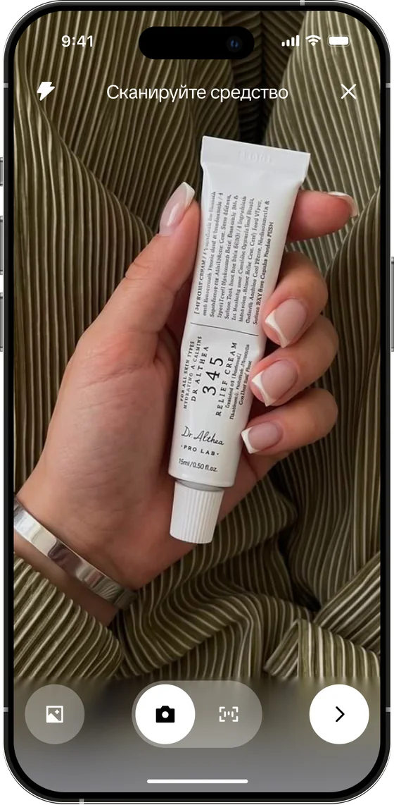
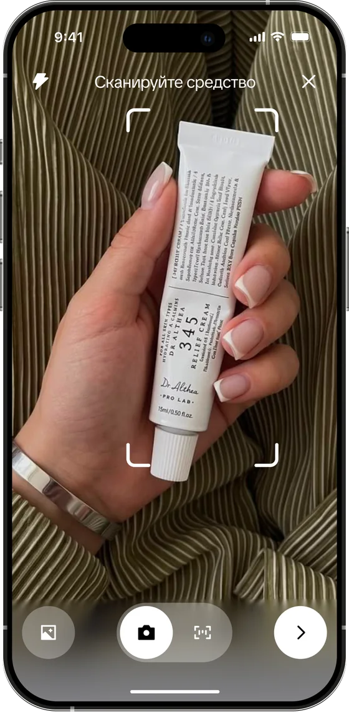
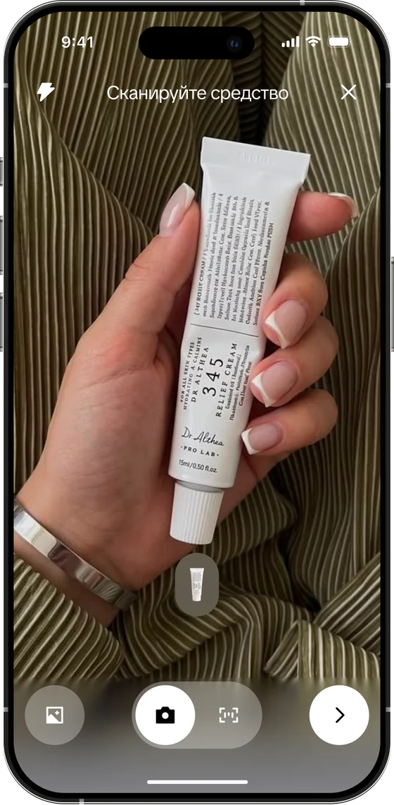
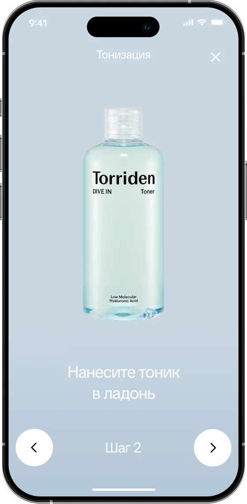

NEURAE
Стратегия запуска первого нейрокосметического бренда в России: научный нарратив, блогерские комьюнити и приложение — без единого собственного магазина.

Кратко
30 секунд на чтениеЗадача
Запустить в России новую категорию косметики
Без своего магазина, без имени Sisley и без скидок.
Инсайт
В России ждут доказательств, а не только сенсорного опыта
Сначала хотят понять, почему это работает.
Решение
Нишевые коллаборации, приложение и лендинг вместо медиабюджета
Знакомство в комьюнити, ежедневный ритуал, объяснение механики.
Смотреть решениеСоздать категорию «нейрокосметика» в России с нуля
Премиум рядом с La Mer и La Prairie. Бренд, который решает причину, а не маскирует следствие.
Работали в жёстких рамках заказчика
Режим тишины
Имя Sisley не используем
Только корнеры
Без своего магазина бренда
Соцсети РФ
Без заблокированных платформ
Глобальная формула
Без адаптации под рынок
Старт 1 октября
Без прелонча
Без промо
Никаких скидок и распродаж
В других странах — ритуал и сенсорика. В России — доказательность
«Маркетинг в премиум-сегменте в России сейчас работает только через коллаборации — всё остальное выжженная земля»
CEO Яндекс Маркета — консультация, которая определила стратегию
Сегментировали не по возрасту, а по тому, как принимают решение
Skin Beast / Ritual
Сверяет независимые источники и обязательно пробует вживую
Hype
Делегирует решение косметологу или подруге
Что предложили
Не охваты, а ниши, которые говорят на языке self‑care
Ритуал ухода с любой косметикой — NEURAE появляется в нужный момент
Главная
Ритуал дня и мои продукты


Сканирование
Наводишь камеру — средства добавляются пачкой






Ритуал
Шаг за шагом, с таймером и подсказкой




Совет ассистента
После ритуала — NEURAE под твою рутину


Пространство бренда без интернет-магазина
Технология NA3
- НейроингредиентыРаботают с реакцией кожи на стресс
- НейроароматыМеняют состояние во время нанесения
- НейротекстурыСенсорный ритуал на коже
Крем действует не хуже бани
Снижение кортизола
Значения условные — заглушка до данных брендаАфиша мероприятий
Что хотели во второй версии приложения
Критерии успеха от заказчика
Заказчику понравилось приложение, жюри подсказало, что усилить
«Мне из вашей защиты очень понравилась идея с приложением, в которое можно добавлять все свои продукты, и не только бренда. Когда я смотрела кейс 12 сторис, как раз думала создать аналог ИИ-гардероба. Для меня был приятный сюрприз увидеть в вашей защите адаптированную такую же идею. Мне понравились ваши финальные визитки — мы могли бы интегрировать такое фото для клиентов в рамках мероприятий бренда».
Заказчик, Sisley Group
Туториалы и результат «до и после»
Заказчик предложил развить приложение в эту сторону.
Объяснить механику без «эмоционального старения»
Голос эксперта и факты о разработке — для аудитории, которая ждёт доказательств.